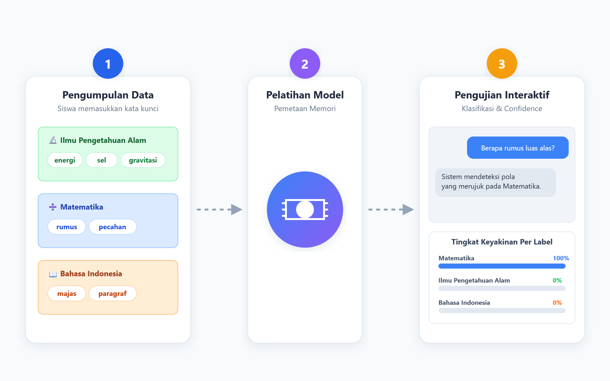

Pada percobaan ini, kamu akan melatih sistem dengan berbagai kosakata untuk melihat bagaimana kelengkapan data menentukan tingkat keyakinan prediksi.

Asisten KA
Aktif
"Sistem menunggu instruksi. Gunakan tombol 'Muat Data Uji' untuk mencoba data secara instan."
Pertanyaan Refleksi
Setelah mencoba pengujian, tuliskan apa yang kamu pelajari tentang data latih dan cara sistem menentukan kategori.
Sistem pengenalan otomatis tidak benar-benar "memahami" makna kalimat layaknya otak manusia membaca buku. Sistem dapat mengelompokkan kalimat karena sebelumnya telah diajarkan untuk mengingat pola dari banyak sekali contoh referensi. Kumpulan kata-kata referensi inilah yang disebut Data Latih.
Mari kita buktikan! Kita akan memberikan data latih berupa kosakata mata pelajaran B. Indonesia, IPS, dan Matematika. Kita akan melihat bagaimana sistem menghitung Tingkat Keyakinan (Confidence Level) untuk memprediksi kategori suatu kalimat!
Memahami bagaimana sistem Kecerdasan Artifisial memproses informasi dan menentukan tingkat keyakinan dalam memberikan respons.
Pada tahap ini, kita bertugas sebagai pembuat sistem. Kita harus memberikan pengetahuan dasar kepada komputer agar ia bisa mulai mengenali pola.
Perhatikan tiga kategori utama yang tersedia di bagian kiri layar: Sains, Matematika, dan Bahasa Indonesia.
Masukkan kata energi dan atom ke dalam kotak Sains. Masukkan kata rumus dan pecahan ke dalam kotak Matematika. Masukkan kata majas dan paragraf ke dalam kotak Bahasa Indonesia.
Ingat kembali tujuan pembelajaran kita: jika kita memasukkan kata yang salah pada tahap ini, sistem kecerdasan buatan akan memberikan jawaban yang salah pada saat pengujian nanti.
Tahap ini berjalan secara otomatis di bagian tengah layar. Kita hanya perlu mengamati bagaimana sistem bekerja.
Sistem akan mengambil semua kata kunci (data latih) yang baru saja kita masukkan dan secara otomatis menyusun kamus ingatannya sendiri.
Komputer kini merekam aturan baku, misalnya: jika ada pengguna yang mengetik kata rumus, maka kalimat tersebut pasti berkaitan dengan kategori Matematika.
Proses ini menunjukkan bahwa mesin tidak berpikir seperti manusia, melainkan mencocokkan pola berdasarkan data latih yang ia miliki.
Setelah sistem selesai mempelajari data latih, kita dapat menguji kecerdasannya melalui simulasi layar telepon genggam di bagian kanan.
Posisikan diri kita sebagai pengguna biasa yang ingin bertanya kepada asisten virtual. Ketikkan sebuah kalimat pada kolom pesan. Sebagai contoh, ketik: "Bagaimana cara menghitung menggunakan rumus tersebut?"
Tekan tombol kirim. Perhatikan bagaimana sistem membedah kalimat kita. Sistem akan mengabaikan kata-kata umum dan fokus menemukan kata kunci yang sudah ia pelajari di Tahap 1.
Karena sistem menemukan kata rumus di dalam kalimat kita, asisten virtual akan langsung membalas dan menyimpulkan bahwa pertanyaan kita masuk ke dalam kategori Matematika.
Di bagian paling bawah layar pengujian, kita akan melihat diagram batang berupa persentase.
Diagram ini menunjukkan seberapa yakin sistem terhadap tebakannya sendiri. Jika persentase Matematika menunjukkan angka 100%, artinya sistem sangat yakin karena kata rumus hanya ada di kategori Matematika pada data latih kita.
kita dapat bereksperimen dengan mengetik kalimat yang tidak mengandung kata kunci sama sekali. kita akan melihat bahwa persentase keyakinan sistem akan menurun, yang membuktikan bahwa kecerdasan sistem sangat terbatas pada data latih yang diberikan.
Maulani Mega Hapsari, S.IP, M.A. (Direktur SMP)
Roelly Herdyanto, S.E., M.Si. (Kasubag Tata Usaha Direktorat SMP)
Cepy Lukman Rusdiana, S.Kom., M.Si. (Pejabat Pembuat Komitmen Direktorat SMP)
Dr. Noris Rahmatullah, S.T., M.T. (Direktorat SMP)
Johan Winarni, S.P., M.Pd. (Direktorat SMP)
Rindhy Anthika Nadya, S.Kom. (Direktorat SMP)
Kunto Imbar Nursetyo, M.Pd. (Universitas Negeri Jakarta)
ZE. Ferdi Fauzan Putra, M.Pd.T. (Universitas Negeri Jakarta)
Bambang Satrio, S.Pd., M.Kom. (Universitas Negeri Jakarta)
Syahidah Humairoh, S.Pd. (SMP Negeri 126 Jakarta)
Ramli Jainal Muttaqin, S.Pd. (SMP Labschool Rawamangun)
Jeremia Reinnatal, S.Pd. (SMP Negeri 150 Jakarta)
Silakan baca dulu bagian Tujuan dan Cara Penggunaan sebelum memulai percobaan.